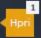
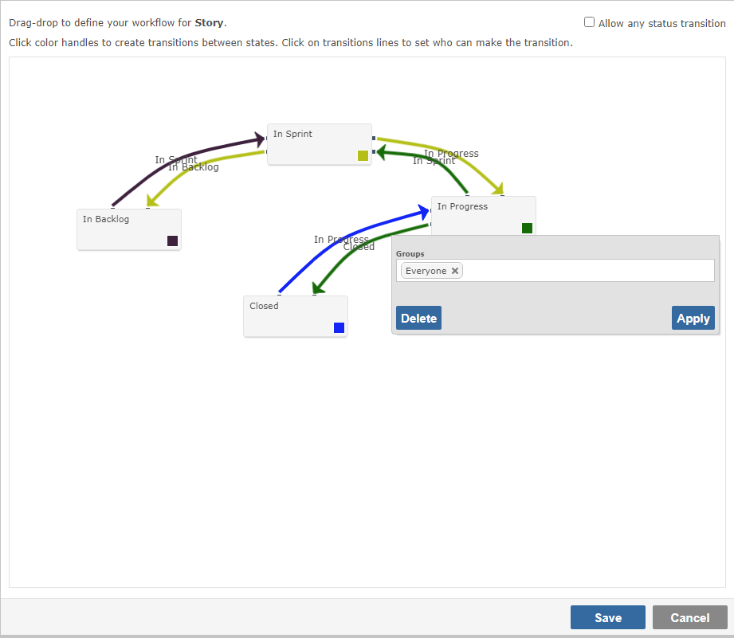

User Permissions
Some background information
Restricting actions to Projects and to Roles in Projects is the domain of Permission Sets. If you have not read the documentation and this type of permission is an issue or query, please read the docs first, and drill down to Permission Roles to understand the granular controls.
Restricting access to Fields and to Field-level Functionality is the domain of Screens. If you have not read the documentation and this type of permission is an issue, please read the docs first, and drill down to Project Templates to understand the links from screens to Process Types (e.g. Tickets, Bugs, Change Requests, Tests etc.)
Troubleshooting
Users aren't receiving notifications
There are a number of things to check, and investigative steps to take if your users aren't receiving notifications.
- Can anyone receive notifications that other users cannot? If no, check your System Email & Alerts. If yes, you have a problem with permissions.
- Are you expecting Follower alerts for users in the Portal User Group? Portal Users must be Owners or Resources to receive Follower notifications about items, if they are not, they will not receive emails on changes.
- Check the Alerts tab on the user profile. Users can disable email notifications, unsubscribe from Workspace alerts, and switch off email notifications about changes they have made themselves.
- If the notifications are Workspace Alerts from a shared Workspace check that the user doesn't have a personal copy of the Workspace. Workspaces can share a name without being connected.
- If you share a Workspace without "Lock and Synch" the user has their own copy.
- Shared Workspaces have an arrow in their icon in G7 and a arrow to the left in G6 
User can't see ______ (fill in the blanks)
Users can see every project, field and piece of functionality in Gemini. The only reason they don't is they lack the permissions to do so. Gemini's permissions are very granular, and sometimes even experts forget them all
- Scenario 1. User(s) can't see or edit a field
- Field level access is controlled on Screens. This extends to things like Comments, Dependencies, Attachments. If anyone can't see a field, check the Screens.
- Screen permissions are configured per Process Type. Please check the Screen for the specific Type and remember that Screens can be shared by different Types.
- Gemini Administrator is a role that grants access to the admin section of the site. It does not confer any rights to view data. Don't assume because you are in the Gemini Administrator role that as a result you will be able to see everything and do anything.
- By default, all fields are assigned to the User Group "Everyone", but you can change that. Click on the icon next to the field to see which User Group(s) have access to it when Creating, Editing, or Viewing.
- Links, Dependencies, Attachments, Comments, Time, Email Reply etc. are all controlled by Screens. If anyone can't 'see' any of that type of functionality, check the Screens for the Project and for the specific Process Type. Never accept 'I can't see...' or 'I can't do...' without demanding to know in which project and for what Type of thing that statement is true.
- Scenario 2. User(s) can't see a project
- Check the project belongs to the Permission Set that you think it belongs to. It is often the problem that the project isn't in any Permission Set.
- Run the Report on the User Maintenance screen for the user concerned, which will show you the role the user has on every project. Make sure they are in Can View Project role for the project concerned.
- Scenario 3. User(s) can't access some functionality
- Fields that are controlled with logic - Comments, Dependencies, Related Items (link), Email Reply - are controlled by Screens in the Content area at the bottom of the page. See Scenario 1.
- Users in the Portal User Group can only see the Grid View and in that view they can only see items they create (or that have been created on their behalf) and items they are assigned to using the Resource field. User in the Portal User Group cannot see or run Reports.
- Apps like Docstore, Roadmap, Changelog etc. must be enabled in every Workspace where a user wishes to use that functionality. Apps have their own Permissions in the admin section and can be restricted to specific User Groups.
- Builtin Apps like the Planning Board, Calendar View etc. are not restricted by App Permissions, but they too must be enabled on a Workspace-by-Workspace basis to appear in the menu.
- Like Apps, Reports can be restricted to User Groups. If a user cannot see a report, check Report Permissions in the admin section to see it is not because of User Group restrictions.
- Scenario 4. User(s) can't add a new item
- If a user is in the Read Only or Read Only with Comments Role, the "Add" item button is removed. Gemini will apply the MOST restrictive permission from all User Groups a user is in.
- If this is a general system problem, and all users are affected, contact Countersoft and let us know the last messages in the System Log following an attempt to add a new record. It is likely you have a database or network problem.
- Scenario 5. User(s) can't use Breeze (email) Reply
- If the user can't see the Email Reply option at all, the problem is that they don't have access through Screens. See Scenarios 1 & 3.
- User gets error sending email using Breeze Reply.
- Check the Screens and ensure that the user can add a comment. Email replies are stored as Comments, so a user must be able to add a comment to send an email reply.
- User can add comments but there is still an error. Ask the user to reply, and immediately check the System Log (Configure Gemini...System...System Log) for errors. Notify Countersoft support if you find an error in the log and the solution is not self-evident. To check for solutions, see the troubleshooting email guide.
- Note: If you purge the Breeze Enquiry table you may not be able to use the Reply function because Gemini knows when messages come from email, and it can generate non-fatal errors looking for mail To and CC lists in the original email data that no longer exists.
- Scenario 6. User(s) not appearing in Resources list
- Can Be Assigned Work (Resource) is a specific Project Role. The user is not in a User Group associated with this role on the project concerned.
- Please be sure you are not referring to a Custom Field that is of type "User Picker" (or any other type) that you use to hold "resources", as opposed to Gemini's Resource field, which has unique functionality.
- In the event that the user is in the right role and you still cannot see the user as a Resource, recycle the App Pool in IIS (or ask Countersoft to do it if you are hosted), as this could be a rare caching problem.
User can see ______ (fill in the blanks) - but they shouldn't!
As explained above, in Gemini, Projects, Fields, and Functionality, are all securable. Please check your Permission Sets, Screens, and Workflow settings. If you can't figure it out, contact Countersoft.
User can't change/set Status
Statuses are controlled by Workflow functionality, which has similarities with Screens in that the default is for the User Group "Everyone" to be able to make a status change, but if you click on the arrow that defines the transition, you can secure any status change and make it available only to specific groups. As Gemini allows you to secure every Workflow transition, if a given Status is not available it means one of 3 things:
- The item has dependencies and you are trying to close it, but one or more of its children aren't closed. Gemini will not let you close the parent item in a hierarchy unless all of its children are closed.
- The Workflow transition from the status the item is on, to the Status you want it to be for, has not been defined. Please remember that you must define bi-directional workflows, they don't automatically exist. If you have a transition from A to B, you must explicitly create a transition back from B to A if you are ever going to want to do that.
- The Workflow transition exists, but the user is not in a User Group that is permitted to make the change. Click on the arrow in the Workflow and see which User Groups are allowed to make it.

- If your configuration and permissions appear to be correct, it is likely that you are not checking the Workflow for the specific Process Type in the specific Project. Workflow is per Process Type.